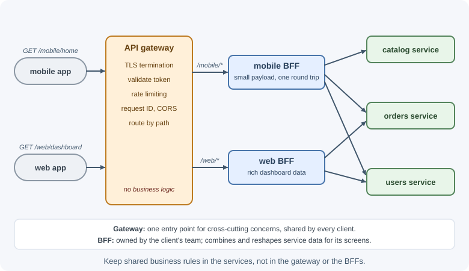
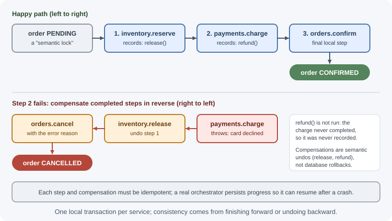
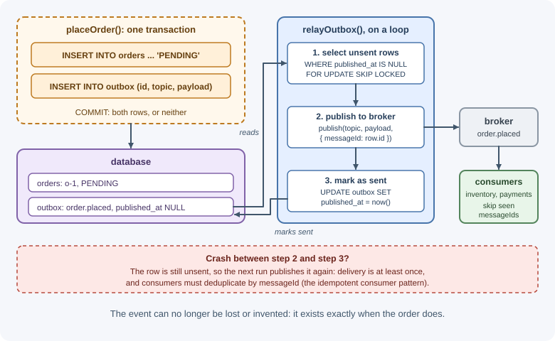

Microservices Patterns¶
Splitting a system into microservices creates problems a monolith never had: how clients find and call many services, how a business transaction spans several databases, how to publish events reliably, and how to debug a request that crosses ten processes. Over time the industry settled on a set of named patterns for these problems. This page explains the essential ones and how they fit together.
Why it matters¶
Most microservice failures come from ignoring these patterns: services that call each other in long synchronous chains and fail together, orders charged but never shipped because a step failed halfway, events lost when a process crashed, and outages nobody can trace. Knowing the patterns—and their costs—is what makes a microservice architecture workable. If you have not yet decided whether to use microservices, read monoliths, modular monoliths, and microservices first.
Real-world usage¶
- Netflix — a gateway at the edge. Netflix's open-source Zuul is a gateway service that provides dynamic routing, monitoring, resiliency, and security in front of backend services (Netflix/zuul on GitHub).
- Netflix — circuit breakers against cascading failure. Netflix built Hystrix, a latency and fault-tolerance library that isolates calls to remote systems to "stop cascading failure." It is now in maintenance mode: stable enough for Netflix's existing applications, while Netflix's focus shifted to more adaptive approaches (Netflix/Hystrix on GitHub).
- Uber — gateways per domain. In Uber's Domain-Oriented Microservice Architecture, each domain exposes a gateway as "a single point of entry" into its collection of services, so callers depend on one interface instead of many services (Uber Engineering).
Popular tools: API gateways (Kong, Nginx, cloud API gateways); Envoy, an L7 proxy designed to run alongside every application server (the sidecar model); service meshes such as Istio and Linkerd; workflow engines such as Temporal and AWS Step Functions for sagas; Debezium's outbox event router; and OpenTelemetry for tracing.
How it works¶
API gateway¶
Without a gateway, clients must know the address of every service, call several of them per screen, and handle authentication and protocols for each. An API gateway is a single entry point that sits in front of the services.
┌─► [ catalog service ]
[ web / mobile ] ──► [ API gateway ] ─┼─► [ orders service ]
└─► [ users service ]
Typical responsibilities:
- Routing requests to the right service (
/orders/*→ orders). - Authentication and token validation at the edge.
- Rate limiting, TLS termination, request size limits.
- Aggregation: combining several service responses into one.
- Protocol translation (for example, HTTP/JSON outside, gRPC inside).
- Cross-cutting concerns: CORS, caching, request IDs, logging.
Costs: another component to run and scale, a possible bottleneck and single point of failure (run several instances), and a temptation to put business logic in it—keep it thin. Managed gateways, Nginx, Envoy, and Kong are common implementations; see also reverse proxy and rate limiting.
Backend for frontend (BFF)¶
Different clients need different data: a mobile app wants small payloads and few round trips; a web dashboard wants rich data. A single general-purpose gateway becomes a compromise for everyone. The BFF pattern gives each client type its own backend layer, owned by the team building that client.

Each BFF aggregates and reshapes data for its screens. The risk is duplicated logic between BFFs; shared business rules belong in the services, not the BFFs.
Service discovery¶
In dynamic environments, service instances start, stop, and move, so their IP addresses change constantly. Service discovery lets callers find healthy instances.
- Server-side discovery: the caller sends requests to a stable address
(a load balancer or a DNS name), which forwards to a healthy instance.
Kubernetes Services work this way:
http://ordersresolves to a virtual IP that balances across pods. - Client-side discovery: the caller asks a service registry (such as Consul or Eureka) for the list of instances and chooses one itself.
Server-side: caller ──► [ load balancer / DNS ] ──► instance A | B | C
Client-side: caller ──query──► [ registry ] ; caller ──► chosen instance
Instances register on startup (or are registered by the platform) and are removed when health checks fail. Most teams today use the server-side discovery their platform provides.
Synchronous versus asynchronous communication¶
| Synchronous (REST, gRPC) | Asynchronous (messaging) | |
|---|---|---|
| Caller waits for a response | Yes | No |
| Availability coupling | Caller fails or slows if the callee does | Producer works even if consumers are down |
| Latency | Adds up along call chains | Work completes later |
| Consistency | Immediate answer | Eventual |
| Complexity | Familiar, simple to trace | Broker, idempotency, ordering, retries |
| Good for | Queries, operations needing an immediate answer | Notifications, workflows, integration, load leveling |
A dangerous anti-pattern is a long synchronous chain: A calls B calls C calls D. If each is 99.9% available, the chain is about 99.6% available, and latencies add up. Prefer asynchronous events for work that does not need an immediate answer, and keep synchronous chains short. See REST and other API styles and messaging fundamentals.
Saga¶
With a database per service, there is no transaction spanning orders, payments, and inventory. A saga implements a business transaction as a sequence of local transactions, one per service. If a step fails, the saga runs compensating transactions to undo the effects of the earlier steps.

Key points:
- Compensations are semantic undos, not database rollbacks. You cannot "un-send" an email; you send a correction. A refund compensates a charge.
- Sagas lack isolation: other requests can see intermediate states. Use
explicit states such as
PENDING(a "semantic lock") so others know the order is not final. - Each step and compensation must be idempotent because messages can be redelivered.
- Steps that cannot be compensated (shipping a parcel) should come last, after the steps that can fail.
Sagas are coordinated by choreography (services react to each other's events) or orchestration (a saga orchestrator sends commands and tracks state). Orchestration is easier to understand and monitor for processes with more than a few steps. See event-driven architecture for the comparison.
Transactional outbox¶
A service often needs to update its database and publish an event. Doing them separately is unsafe:
- Save, then publish: the process crashes in between → the event is lost.
- Publish, then save: the save fails → consumers react to something that never happened.
You cannot put the database and the broker in one transaction. The
transactional outbox solves this: write the event into an outbox
table in the same local transaction as the business change. A separate
relay process reads the outbox and publishes to the broker, marking rows
as sent.

The relay can poll the table or use change data capture (such as MongoDB change streams or Debezium). Because the relay may publish a row twice (for example, it crashes after publishing but before marking it sent), delivery is at least once, and consumers must deduplicate.
Idempotent consumer¶
Brokers deliver messages at least once, so a consumer can receive the same message twice. An idempotent consumer records the IDs of messages it has processed and skips duplicates, ideally in the same transaction as its own state change:
receive message (id = m-123)
BEGIN
INSERT INTO processed_messages (id) VALUES ('m-123') ← unique key
→ if it already exists: duplicate, ROLLBACK, acknowledge, stop
apply the business change
COMMIT
acknowledge the message
See timeouts, retries, and idempotency and delivery guarantees.
Circuit breaker¶
When a downstream service is failing or very slow, callers that keep retrying waste resources, pile up waiting requests, and can bring themselves down—a cascading failure. A circuit breaker wraps calls to a dependency and, after too many failures, "opens" to fail fast for a while, then lets a few trial calls through to check recovery.
CLOSED ──(failures exceed threshold)──► OPEN ──(cool-down elapsed)──► HALF-OPEN
▲ │
└──────────────(trial calls succeed)─────────────────────────────────┘
(trial call fails) ──► back to OPEN
Combine circuit breakers with timeouts, limited retries with backoff, and fallbacks (cached data, a degraded response). Implementation details are in timeouts, retries, and idempotency.
Strangler fig¶
The strangler fig pattern migrates from a monolith to services incrementally: put a routing layer in front of the monolith and move one capability at a time to a new service, routing its traffic there, until the monolith can be retired. See monoliths, modular monoliths, and microservices.
Sidecar and service mesh¶
Every service needs the same networking features: mutual TLS, retries, timeouts, load balancing, metrics, and tracing. Implementing them in every service and language is repetitive.
- A sidecar is a helper process deployed alongside each service instance (in Kubernetes, a second container in the same pod). It shares the service's network and lifecycle and handles a cross-cutting concern, such as proxying traffic or shipping logs.
- A service mesh (such as Istio or Linkerd) places a proxy sidecar next to every service and manages them centrally. All service-to-service traffic flows through the proxies, which provide mTLS, retries, timeouts, traffic splitting for canary releases, and uniform telemetry—without changing application code.
[ orders app ]⇄[ proxy ] ════ mTLS ════ [ proxy ]⇄[ payments app ]
▲ ▲
└──── control plane: policies, certificates, config
A mesh adds operational complexity and some latency; it pays off with many services and strict security or traffic-management needs.
Database per service¶
Each service owns its data and exposes it only through its API or events. This enables independent deployment and scaling, but cross-service queries need API composition (call several services and join in memory) or a read model built from events (CQRS). See monoliths, modular monoliths, and microservices and event-driven architecture.
Distributed tracing¶
A single user request may pass through a gateway and many services. Logs in each service do not show the whole story unless they are connected. Distributed tracing assigns each request a trace ID that is passed along on every call and message. Each unit of work records a span with its timing and parent span, and a tracing backend assembles them into one timeline.
Trace 4f2a… POST /checkout [==========] 820 ms
├─ gateway: auth [=] 20 ms
├─ orders: create order [===] 150 ms
│ └─ postgres: INSERT [=] 40 ms
├─ payments: charge [=====] 600 ms ← slow
└─ publish order.placed [=] 10 ms
OpenTelemetry is the standard for producing traces, metrics, and logs. Always include the trace or correlation ID in logs. See logging and monitoring.
When to use and when not to use¶
These patterns solve problems that only exist once you have several services. In a monolith, most of them are unnecessary.
| Pattern | Use when | Skip or postpone when |
|---|---|---|
| API gateway | External clients call more than a few services | One service, or internal-only traffic |
| BFF | Mobile and web need very different data shapes | One client type, or a gateway already fits |
| Saga (orchestration) | Many steps, compensations, monitoring needs | Two simple steps, or one database transaction is possible |
| Saga (choreography) | Few, independent reactions | The flow is long and must be visible in one place |
| Transactional outbox | A state change must publish an event reliably | Losing an occasional notification is acceptable |
| Idempotent consumer | Messages are delivered at least once (almost always) | The handler is naturally idempotent |
| Circuit breaker | Synchronous calls to dependencies that can fail or slow down | Calls are asynchronous through a queue |
| Service mesh | Many services, strict mTLS and traffic policies | A handful of services; libraries are simpler |
Use these patterns when:
- You already run several independently deployed services, or are extracting them.
- Failures in one service must not take down others.
- Business processes span services that each own their data.
Do not adopt them speculatively: a gateway, mesh, and saga engine in front of two services add moving parts without solving a problem you have.
Practical examples¶
Transactional outbox with PostgreSQL¶
import pg from "pg";
const pool = new pg.Pool({ connectionString: process.env.DATABASE_URL });
// 1. Business change and event in ONE local transaction
export async function placeOrder(order) {
const client = await pool.connect();
try {
await client.query("BEGIN");
await client.query(
"INSERT INTO orders (id, customer_id, total_cents, status) VALUES ($1, $2, $3, 'PENDING')",
[order.id, order.customerId, order.totalCents],
);
await client.query(
"INSERT INTO outbox (id, topic, payload) VALUES ($1, $2, $3)",
[crypto.randomUUID(), "order.placed", JSON.stringify({ orderId: order.id })],
);
await client.query("COMMIT");
} catch (error) {
await client.query("ROLLBACK");
throw error;
} finally {
client.release();
}
}
// 2. Relay: publish unsent rows. SKIP LOCKED lets several relays run safely.
export async function relayOutbox(broker) {
const client = await pool.connect();
try {
await client.query("BEGIN");
const { rows } = await client.query(
`SELECT id, topic, payload FROM outbox
WHERE published_at IS NULL
ORDER BY created_at
LIMIT 100
FOR UPDATE SKIP LOCKED`,
);
for (const row of rows) {
await broker.publish(row.topic, row.payload, { messageId: row.id }); // id lets consumers dedupe
await client.query("UPDATE outbox SET published_at = now() WHERE id = $1", [row.id]);
}
await client.query("COMMIT");
} catch (error) {
await client.query("ROLLBACK");
throw error;
} finally {
client.release();
}
}
A minimal saga orchestrator¶
export async function runCheckoutSaga({ orderId, items, payment }, services) {
const completed = [];
try {
await services.inventory.reserve(orderId, items);
completed.push(() => services.inventory.release(orderId));
await services.payments.charge(orderId, payment);
completed.push(() => services.payments.refund(orderId));
await services.orders.confirm(orderId);
} catch (error) {
// Compensate completed steps in reverse order
for (const compensate of completed.reverse()) {
await compensate(); // must be idempotent; production code retries and records progress
}
await services.orders.cancel(orderId, { reason: error.message });
throw error;
}
}
A production orchestrator persists the saga's state after each step (so it can resume after a crash), retries compensations, and usually communicates with services through messages. Workflow engines such as Temporal or AWS Step Functions provide this durability.
How the patterns fit together¶
client ─► API gateway / BFF ─► orders service ─(outbox)─► broker ─► inventory, payments
│ │ (idempotent consumers)
auth, routing, saga orchestrator coordinates checkout,
rate limiting circuit breakers on sync calls,
trace IDs propagated everywhere,
database per service
Best practices¶
- Keep the gateway thin: routing and cross-cutting concerns, no business logic.
- Prefer asynchronous messaging for work that does not need an immediate answer; keep synchronous call chains short.
- Put timeouts, bounded retries, and circuit breakers on every remote call.
- Use the transactional outbox whenever a state change must publish an event.
- Make every consumer, saga step, and compensation idempotent.
- Prefer saga orchestration for multi-step processes; persist saga state.
- Propagate trace IDs everywhere and log them.
- Adopt a service mesh only when the number of services and security needs justify it.
In production¶
- Outbox relay lag. Symptom: consumers react to orders minutes late.
Detect: the age of the oldest unpublished outbox row keeps growing.
Cause: the relay is down, too slow, or blocked; or the
published_atquery has no index. Fix: alert on that age, run several relays (SKIP LOCKEDallows it), index unsent rows, and delete published rows on a schedule so the table stays small. - Stuck sagas. Symptom: orders stay
PENDINGforever. Detect: a count of sagas in a non-final state older than a few minutes. Cause: the orchestrator crashed without persisted progress, or a compensation keeps failing. Fix: persist saga state after every step, retry compensations, alert on stuck sagas, and keep a runbook for manual repair. - Retry storms. Symptom: a recovering service is flattened by traffic again. Detect: request rate to the dependency jumps to several times normal right after an incident. Cause: every caller retries immediately, at every layer. Fix: exponential backoff with jitter, retry budgets, and circuit breakers that open quickly.
- Cascading timeouts. Symptom: one slow service makes the whole checkout slow or failing. Detect: traces show requests waiting on one span, and thread or connection pools saturate. Cause: synchronous chains without timeouts. Fix: timeouts on every call, circuit breakers, and asynchronous messaging where possible.
- Traces that stop at the queue. Symptom: the trace for a request ends when it publishes an event, hiding what happened next. Detect: traces missing consumer spans. Cause: trace context not copied into message headers. Fix: propagate trace context through messages with OpenTelemetry instrumentation.
- The gateway becomes the bottleneck. Symptom: every request is slow, even simple ones. Detect: gateway CPU and p99 latency rise with traffic. Cause: business logic or heavy aggregation in the gateway, or too few instances. Fix: move logic into services or BFFs and scale the gateway horizontally.
Important terminology¶
- API gateway: A single entry point that routes and secures requests to services.
- BFF (backend for frontend): A client-specific backend layer.
- Service discovery / registry: Finding healthy service instances.
- Saga: A sequence of local transactions with compensations for failure.
- Compensating transaction: An action that semantically undoes an earlier step.
- Transactional outbox: Storing outgoing events in the same transaction as the state change.
- Relay: The process that publishes outbox rows to the broker.
- Idempotent consumer: A consumer that safely ignores duplicate messages.
- Circuit breaker: A wrapper that stops calling a failing dependency for a while.
- Sidecar: A helper process deployed next to each service instance.
- Service mesh: A network of sidecar proxies managed by a control plane.
- Distributed trace / span: The end-to-end record of a request / one timed unit of work within it.
Common mistakes and misconceptions¶
- Business logic in the API gateway, turning it into a shared monolith.
- Long chains of synchronous calls, multiplying latency and failure probability.
- Publishing events outside the transaction and losing or inventing events.
- Assuming a saga is like a database transaction, ignoring visible intermediate states.
- Retrying without idempotency, causing double charges.
- Retries without circuit breakers or backoff, creating retry storms.
- No trace IDs, making cross-service debugging nearly impossible.
Revision questions¶
- What responsibilities belong in an API gateway, and what should stay out?
- Compare client-side and server-side service discovery.
- Walk through a saga for checkout, including the compensations when payment fails.
- Why is "save to the database, then publish to the broker" unsafe, and how does the outbox fix it?
- What problem does a circuit breaker solve, and what are its three states?
- What does a service mesh provide, and what does it cost?
Further learning¶
- microservices.io: API gateway pattern
- microservices.io: Saga pattern
- microservices.io: Transactional outbox
- microservices.io: Server-side service discovery
- Azure Architecture Center: Backends for frontends pattern
- Azure Architecture Center: Sidecar pattern
- Martin Fowler: Circuit breaker
- OpenTelemetry documentation